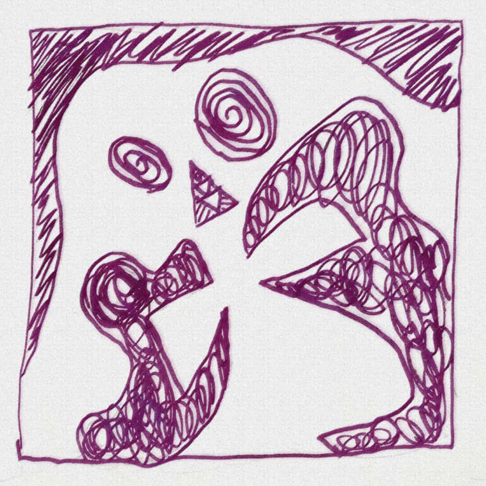

--Upcoming Shows--
--Upcoming Shows--
[example] scratching tongues is (your names)
located in Portland, Oregon
*

and then down here it could be cover artwork that leads to that album/song on bandcamp. If I can figure it out, I might also be able to put a live player directly on the page but no promises lol
I could also add more pages to navigate to like a contact page, updates page, and/or anything else you'd like
